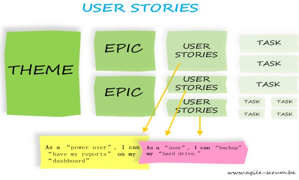

Backlog do Produto
Introdução
O backlog (ou registro pendente de trabalhos) é uma lista priorizada de requisitos e funcionalidades que agregam valor ao cliente e orientam o desenvolvimento do projeto. O backlog é dividido em dois níveis: o Product Backlog, que contém todas as funcionalidades planejadas para o sistema, e o Sprint Backlog, que reúne as tarefas selecionadas para o ciclo de desenvolvimento em andamento.
Este trabalho adotou uma abordagem colaborativa para a priorização do Sprint Backlog e a validação do Product Backlog, levando em conta a restrição decorrente da ausência de um Product Owner (PO) formal. A metodologia utilizada seguiu o princípio de que a priorização estratégica deve envolver stakeholders relevantes.
Integrantes do Grupo
A Tabela 1 apresenta todos os integrantes da equipe que participaram da etapa de Backlog do Produto, juntamente com a descrição das atividades que cada um desenvolveu durante o projeto.
Metodologia
Estrutura Hierárquica e Fluxo de Trabalho
Cada aluno ficou responsável pela redação das especificações (histórias de usuário, épicos e temas) referentes aos requisitos previamente escolhidos, além de conduzir uma entrevista com o usuário, com o objetivo de validar os itens do backlog.
A modelagem seguiu a ordem Histórias de Usuário → Épicos → Temas, de forma a manter uma sequência concisa e refletir um nível crescente de abstração, conforme a apresentado na Figura 1 e conforme apresentado nos slides da aula Requisitos – Aula 15, de Milene Serrano e Maurício Serrano.
- Histórias de Usuário: São pequenas descrições do que o usuário precisa que o sistema faça, sempre escritas de forma simples e direta. Elas focam no “o que” deve ser feito, e não no “como”. Cada história representa uma funcionalidade que gera valor para o usuário.
- Épicos: São grupos maiores de histórias de usuário que tratam de um mesmo tema ou objetivo mais amplo. Cada épico representa uma parte importante do produto, que pode ser dividida em várias histórias menores.
- Temas: São categorias gerais que reúnem vários épicos com objetivos parecidos, ajudando a organizar o produto em áreas de foco.

Priorização do Sprint Backlog
Nesta etapa, também foi realizada uma entrevista com um usuário para classificar cada História de Usuário e, consequentemente, o Épico a ela relacionado, de acordo com três níveis de prioridade:
- Alta prioridade: Funcionalidades essenciais, usadas com frequência ou diretamente ligadas à proposta de valor principal do sistema;
- Média prioridade: Funcionalidades importantes, mas que podem ser entregues em sprints futuros sem comprometer o produto;
- Baixa prioridade: Funcionalidades complementares ou de menor impacto imediato para o usuário.
Backlog
A tabela a seguir resume os temas, épicos, histórias de usuário, requisitos relacionados e priorização, representando a Tabela do Product Backlog do projeto.
| Tema | Épico | História de Usuário | Requisitos | Priorização |
|---|---|---|---|---|
| TM01. Identificação e Perfis de Usuário | EP01 – Gerenciar Perfis de Usuários | US01 - Identificação e Autenticação de Usuários | RF01 | Média |
| US02 - Visualizar e Gerenciar Perfil Individual | RF02 | Média | ||
| TM02. Conteúdo e Aprendizagem Significativa | EP02 – Mapear e Estruturar Conteúdos segundo a TAS | US03 - Mapeamento de Conceitos segundo a Teoria da Aprendizagem Significativa (TAS) | RF03 | Media |
| EP03 – Organizar e Publicar Materiais por Tópicos e Níveis Cognitivos | US31 – Organização de Materiais por Tópicos de Conteúdo | RF31 | Alta | |
| TM03. Avaliação e Planejamento Educacional | EP04 – Integrar o Processo de Avaliação ao Ambiente Virtual | US04 - Alinhamento do Plano de Ensino ao AVA | RF04 | Media |
| EP05 – Relacionar Avaliação Docente com Inferências do Assistente Educacional | US05 - Integração de Avaliações ao AVA | RF05 | Media | |
| EP07 – Exibir Cálculos de Desempenho com Base em Dados e Inferências | US23 – Cálculo do Desempenho do Aluno | RF23 | Alta | |
| TM04. Assistente Virtual Inteligente | EP06 – Utilizar Lógica Fuzzy para Apoiar Decisões Pedagógicas | US06 – Combinar Resultados Formais com Inferências Fuzzy | RF06 | Alta |
| US37 – Inferências com Lógica Fuzzy | RF37 | Alta | ||
| EP09 – Criar Personagem Interativo Customizável | US35 - Criar Personagem Antropomórfico para Interação Direta | RF35 | Baixa | |
| US38 - Visualizar Personagem do Assistente Virtual | RF38 | Baixa | ||
| US39 – Customizar o Assistente Virtual | RF39 | Baixa | ||
| EP10 – Analisar Dificuldades Cognitivas e Sugerir Conteúdos | US49 – Análise Cognitiva e Apoio à Aprendizagem | RF49 | Alta | |
| EP11 – Acompanhar Interações e Progresso do Usuário | US46 – Exibir Progresso do Aluno | RF46 | Alta | |
| EP12 – Promover Compreensão da Aprendizagem por Interação Inteligente | US36 – Analisar Situação de Aprendizagem na Interação | RF36 | Alta | |
| TM05. Análise e Visualização de Desempenho | EP13 – Gerar Análises em Tempo Real com Gráficos e Indicadores | US11 - Exibir Média Geral da Turma | RF11 | Alta |
| US21 – Exibir Dados e Informações Analíticas | RF21 | Alta | ||
| US22 – Gerar Análises em Tempo Real com Gráficos | RF22 | Alta | ||
| EP14 – Exibir Médias e Porcentagens por Conteúdo e Usuário | US09 – Visualizar Porcentagem de Acertos por Conteúdo | RF09 | Alta | |
| US10 – Visualizar Porcentagem de Erros por Conteúdo | RF10 | Media | ||
| US12 – Exibir Média do Usuário Após Atividade | RF12 | Media | ||
| EP15 – Identificar Conteúdos com Maior Índice de Erro | US16 - Índice de Conteúdos Ordenado por Porcentagem de Erros | RF16 | Media | |
| TM06. Progresso e Engajamento do Aluno | EP16 – Exibir Progresso Completo e Percentual do Aluno | US07 – Visualizar Progresso do Aluno na Disciplina | RF07 | Alta |
| US08 – Exibir Progresso da Disciplina em Porcentagem | RF08 | Media | ||
| EP17 – Permitir Marcação de Tópicos de Facilidade | US14 – Seleção de Disciplinas Mais Fáceis | RF14 | Alta | |
| TM07. Alertas e Notificações Inteligentes | EP18 – Configurar Preferências de Tempo e Forma de Notificação | US13 - Configurar Alertas de Atividades Atrasadas | RF13 | Alta |
| US18 – Definir Forma Preferida de Notificação | RF18 | Alta | ||
| EP19 – Enviar Alertas sobre Prazos e Revisões de Conteúdo | US15 – Enviar Notificações para Revisão de Conteúdos | RF15 | Média | |
| US19 – Enviar Notificação sobre Prazo de Entrega de Atividade | RF19 | Média | ||
| TM08. Recursos Multimídia e Materiais Didáticos | EP20 – Disponibilizar Vídeo Aulas como Recurso Complementar | US20 - Configuração de Notificação de Prazos pelo Usuário | RF20 | Media |
| US17 – Assistir a uma Videoaula do Conteúdo | RF17 | Alta | ||
| EP21 – Gerar Questões Baseadas em Vídeo Aulas | US30 – Direcionamento Sob Medida de Materiais aos Alunos | RF30 | Média | |
| TM09. Banco de Questões e Atividades | EP22 – Criar e Organizar Questões Interativas | US25 - Interação com Questões (Avaliação Informativa e Formativa) | RF25 | Media |
| US24 – Criar e Organizar Questões Interativas | RF24 | Alta | ||
| EP23 – Gerenciar Banco de Questões de Professores e Outras Fontes | US28 - Gerenciar Banco de Questões do Professor | RF28 | Alta | |
| US32 – Filtrar Banco de Questões por Conteúdo | RF32 | Alta | ||
| TM10. Integração e Centralização de Sistemas | EP24 – Integrar com Outros Sistemas Educacionais | US33 – Integração com Softwares Educacionais Externos | RF33 | Alta |
| EP25 – Centralizar Informações Educacionais | US34 - Centralizar Informações de Atividades e Desempenho | RF34 | Media | |
| TM11. Comunicação e Colaboração Acadêmica | EP26 – Facilitar Comunicação via Chat e Monitoria | US43 – Facilitar Interação entre Monitores, Professores e Alunos | RF43 | Média |
| US44 – Chat Síncrono para Interação a Distância | RF44 | Média | ||
| US47 – Informações sobre Horários e Locais de Monitoria | RF47 | Média | ||
| EP27 – Fornecer Dados ao Professor sobre Domínio e Comportamento | US41 – Notificação de Conteúdos Mais Difíceis ao Aluno | RF41 | Média | |
| US50 – Identificar Conhecimento do Aluno | RF50 | Média | ||
| US51 – Identificar Comportamento Adequado do Aluno | RF51 | Média |
Temas
TM01. Identificação e Perfis de Usuário
Funcionalidades relacionadas ao cadastro, autenticação e gerenciamento de perfis de alunos, professores, monitores, coordenadores e administradores. Permite personalizar a experiência do usuário e controlar o acesso às funcionalidades conforme o papel.
Épicos relacionados:
TM02. Conteúdo e Aprendizagem Significativa
Funcionalidades voltadas à organização, mapeamento e estruturação de conteúdos seguindo a Teoria da Aprendizagem Significativa (TAS).
Épicos relacionados:
- EP02 – Mapear e Estruturar Conteúdos segundo a TAS
- EP03 – Organizar e Publicar Materiais por Tópicos e Níveis Cognitivos
TM03. Avaliação e Planejamento Educacional
Funcionalidades que permitem planejar, aplicar e acompanhar avaliações, integrando resultados formais com feedbacks para melhorar o desempenho pedagógico.
Épicos relacionados:
- EP04 – Integrar o Processo de Avaliação ao Ambiente Virtual
- EP05 – Relacionar Avaliação Docente com Inferências do Assistente Educacional
- EP07 – Exibir Cálculos de Desempenho com Base em Dados e Inferências
TM04. Assistente Virtual Inteligente
Funcionalidades que permitem interação personalizada com o assistente virtual, fornecendo recomendações, inferências e suporte adaptativo aos usuários, incluindo uso de lógica Fuzzy para decisões pedagógicas graduais.
Épicos relacionados:
- EP06 – Utilizar Lógica Fuzzy para Apoiar Decisões Pedagógicas
- EP09 - Criar Personagem Interativo Customizável
- EP10 – Analisar Dificuldades Cognitivas e Sugerir Conteúdos
- EP11 – Acompanhar Interações e Progresso do Usuário
TM05. Análise e Visualização de Desempenho
Funcionalidades que geram gráficos, indicadores e relatórios em tempo real, permitindo professores e gestores acompanhar o desempenho dos alunos e tomar decisões pedagógicas fundamentadas.
Épicos relacionados:
- EP13 – Gerar Análises em Tempo Real com Gráficos e Indicadores
- EP14 – Exibir Médias e Porcentagens por Conteúdo e Usuário
- EP15 – Identificar Conteúdos com Maior Índice de Erro
TM06. Progresso e Engajamento do Aluno
Funcionalidades para monitorar interações e progresso dos alunos, identificando tópicos dominados, dificuldades e lacunas de aprendizagem, promovendo acompanhamento contínuo e personalizado.
Épicos relacionados:
- EP16 – Exibir Progresso Completo e Percentual do Aluno
- EP17 – Permitir Marcação de Tópicos de Facilidade
TM07. Alertas e Notificações Inteligentes
Funcionalidades que enviam alertas automáticos e notificações personalizadas, lembrando sobre prazos, revisões e eventos relevantes.
Épicos relacionados:
- EP18 – Configurar Preferências de Tempo e Forma de Notificação
- EP19 – Enviar Alertas sobre Prazos e Revisões de Conteúdo
TM08. Recursos Multimídia e Materiais Didáticos
Funcionalidades que disponibilizam materiais educacionais multimídia, como textos, vídeos, imagens e exercícios interativos, favorecendo diferentes estilos de aprendizagem.
Épicos relacionados:
- EP20 – Disponibilizar Vídeo Aulas como Recurso Complementar
- EP21 – Gerar Questões Baseadas em Vídeo Aulas
TM09. Banco de Questões e Atividades
Funcionalidades para criar, organizar e gerenciar questões e atividades, permitindo reutilização, avaliação formativa e feedback automático.
Épicos relacionados:
- EP22 – Criar e Organizar Questões Interativas
- EP23 – Gerenciar Banco de Questões de Professores e Outras Fontes
TM10. Integração e Centralização de Sistemas
Funcionalidades que permitem integrar o sistema com outros softwares educacionais e AVAs, centralizando informações acadêmicas e facilitando a interoperabilidade.
Épicos relacionados:
TM11. Comunicação e Colaboração Acadêmica
Funcionalidades para interação e colaboração entre alunos, professores e monitores, via chat, fórum e monitoria, promovendo engajamento e troca de conhecimento.
Épicos relacionados:
- EP26 – Facilitar Comunicação via Chat e Monitoria
- EP27 – Fornecer Dados ao Professor sobre Domínio e Comportamento
Épicos
Para deixar os temas mais claros e menos abstratos, foram criados os épicos, que ajudam a organizar e detalhar melhor as funcionalidades do sistema. Cada épico representa um objetivo principal do projeto, que pode ser dividido em partes menores, chamadas de histórias de usuário, facilitando o entendimento do sistema.
EP01 – Gerenciar Perfis de Usuários
Descrição: Permitir o gerenciamento de perfis de usuários conforme seus papéis educacionais, como aluno, professor, monitor e gestor.
Histórias relacionadas:
EP02 – Mapear e Estruturar Conteúdos segundo a TAS
Descrição: Mapear e estruturar conteúdos de acordo com a Teoria da Aprendizagem Significativa (TAS), facilitando a organização pedagógica do material.
Histórias relacionadas:
EP03 – Organizar e Publicar Materiais por Tópicos e Níveis Cognitivos
Descrição: Organizar e publicar materiais educacionais considerando tópicos, níveis cognitivos e relações entre conteúdos.
Histórias relacionadas:
EP04 – Integrar o Processo de Avaliação ao Ambiente Virtual
Descrição: Integrar o processo formal de avaliação ao ambiente virtual de aprendizagem, permitindo o acompanhamento contínuo do desempenho.
Histórias relacionadas:
EP05 – Relacionar Avaliação Docente com Inferências do Assistente Educacional
Descrição: Associar resultados de avaliações docentes às inferências geradas pelo assistente educacional, promovendo feedbacks mais precisos.
Histórias relacionadas:
EP06 – Utilizar Lógica Fuzzy para Apoiar Decisões Pedagógicas
Descrição: Empregar lógica Fuzzy para apoiar decisões pedagógicas, considerando incertezas e avaliações graduais.
Histórias relacionadas:
EP07 – Exibir Cálculos de Desempenho com Base em Dados e Inferências
Descrição: Exibir cálculos de desempenho que combinem dados objetivos e inferências do sistema, favorecendo a análise pedagógica.
Histórias relacionadas:
EP08 – Oferecer Assistência Personalizada a Alunos e Professores
Descrição: Fornecer assistência personalizada por meio do assistente virtual, adaptando respostas e recomendações ao perfil do usuário.
Histórias relacionadas: - US26 - Assistência ao Professor no Módulo de Interação
EP09 – Criar Personagem Interativo Customizável
Descrição: Desenvolver um personagem interativo com interface visual e opções de personalização para melhorar a experiência do usuário.
Histórias relacionadas:
- US35 - Criar Personagem Antropomórfico para Interação Direta
- US38 - Visualizar Personagem do Assistente Virtual
- US39 – Customizar o Assistente Virtual
EP10 – Analisar Dificuldades Cognitivas e Sugerir Conteúdos
Descrição: Analisar o desempenho cognitivo dos alunos e sugerir conteúdos adequados para superar lacunas de aprendizagem.
Histórias relacionadas:
EP11 – Acompanhar Interações e Progresso do Usuário
Descrição: Monitorar as interações do usuário com o sistema e acompanhar seu progresso de forma contínua.
Histórias relacionadas:
EP12 – Promover Compreensão da Aprendizagem por Interação Inteligente
Descrição: Favorecer a compreensão do aprendizado por meio de interações inteligentes e adaptativas com o assistente virtual.
Histórias relacionadas:
EP13 – Gerar Análises em Tempo Real com Gráficos e Indicadores
Descrição: Produzir análises e gráficos de desempenho em tempo real, permitindo o acompanhamento dinâmico dos resultados.
Histórias relacionadas:
- US11 - Exibir Média Geral da Turma
- US21 – Exibir Dados e Informações Analíticas
- US22 – Gerar Análises em Tempo Real com Gráficos
EP14 – Exibir Médias e Porcentagens por Conteúdo e Usuário
Descrição: Exibir médias e porcentagens de desempenho organizadas por conteúdo, turma e usuário.
Histórias relacionadas:
- US09 – Visualizar Porcentagem de Acertos por Conteúdo
- US10 – Visualizar Porcentagem de Erros por Conteúdo
- US12 – Exibir Média do Usuário Após Atividade
EP15 – Identificar Conteúdos com Maior Índice de Erro
Descrição: Detectar conteúdos que apresentem altos índices de erro, fornecendo subsídios para a intervenção pedagógica.
Histórias relacionadas: - US16 - Índice de Conteúdos Ordenado por Porcentagem de Erros
EP16 – Exibir Progresso Completo e Percentual do Aluno
Descrição: Mostrar o progresso total e percentual do aluno em cada disciplina, auxiliando no acompanhamento de seu desenvolvimento.
Histórias relacionadas:
- US07 – Visualizar Progresso do Aluno na Disciplina
- US08 – Exibir Progresso da Disciplina em Porcentagem
EP17 – Permitir Marcação de Tópicos de Facilidade
Descrição: Permitir que o aluno marque tópicos que considera fáceis ou dominados, para personalizar seu plano de estudo.
Histórias relacionadas:
EP18 – Configurar Preferências de Tempo e Forma de Notificação
Descrição: Permitir que o usuário defina o modo e o tempo em que deseja receber notificações do sistema.
Histórias relacionadas:
EP19 – Enviar Alertas sobre Prazos e Revisões de Conteúdo
Descrição: Enviar notificações automáticas lembrando o usuário sobre prazos, revisões e atividades pendentes.
Histórias relacionadas:
- US15 – Enviar Notificações para Revisão de Conteúdos
- US19 – Enviar Notificação sobre Prazo de Entrega de Atividade
EP20 – Disponibilizar Vídeo Aulas como Recurso Complementar
Descrição: Oferecer vídeo aulas como recurso complementar aos materiais escritos e atividades práticas.
Histórias relacionadas: - US20 - Configuração de Notificação de Prazos pelo Usuário
EP21 – Gerar Questões Baseadas em Vídeo Aulas
Descrição: Criar automaticamente questões de reforço cognitivo com base no conteúdo de vídeo aulas.
Histórias relacionadas:
EP22 – Criar e Organizar Questões Interativas
Descrição: Criar e organizar questões interativas voltadas à avaliação formativa e autoavaliação do aluno.
Histórias relacionadas:
- US25 - Interação com Questões (Avaliação Informativa e Formativa)
- US24 – Criar e Organizar Questões Interativas
EP23 – Gerenciar Banco de Questões de Professores e Outras Fontes
Descrição: Gerenciar um banco de questões provenientes de diferentes origens, permitindo filtragem e reutilização.
Histórias relacionadas:
- US28 - Gerenciar Banco de Questões do Professor
- US29 - Banco de Questões com Fontes Externas
- US32 – Filtrar Banco de Questões por Conteúdo
EP24 – Integrar com Outros Sistemas Educacionais
Descrição: Integrar o sistema a outros softwares educacionais e ambientes virtuais de aprendizagem (AVAs).
Histórias relacionadas:
- [US33 – Integração com Softwares Educacionais Externos](https://requisitos-de-software.github.io/2025.2-Grupo03/Modelagem/historias_de_usuario/#us33-integracao-com-softwares-educacionais-externos
EP25 – Centralizar Informações Educacionais
Descrição: Centralizar informações acadêmicas em um único ambiente, reduzindo o esforço docente e evitando duplicidade de dados.
Histórias relacionadas:
EP26 – Facilitar Comunicação via Chat e Monitoria
Descrição: Disponibilizar canais de comunicação síncronos e assíncronos (chat, fórum, monitoria) entre alunos e professores.
Histórias relacionadas:
- US43 – Facilitar Interação entre Monitores, Professores e Alunos
- US44 – Chat Síncrono para Interação a Distância
- US47 – Informações sobre Horários e Locais de Monitoria
EP27 – Fornecer Dados ao Professor sobre Domínio e Comportamento
Descrição: Fornecer ao professor dados sobre o domínio de conteúdo e o comportamento de aprendizagem dos alunos, auxiliando na personalização do ensino.
Histórias relacionadas:
- US41 – Notificação de Conteúdos Mais Difíceis ao Aluno
- US42 - Notificação de Conteúdos Mais Difíceis ao Professor
- US50 – Identificar Conhecimento do Aluno
- US51 – Identificar Comportamento Adequado do Aluno
Gravações da Validação e Priorização do Documento
Gravação 1
A Tabela 3 mostra os participantes do grupo envolvidos na validação e priorização.
| Nome |
|---|
| Arthur Guilherme |
| Tiago Lemes |
| Vilmar José |
A Tabela 4 apresenta as informações do usuário que participou da etapa de validação e priorização, incluindo seu nome e dados sobre a gravação, como data, hora e local.
| Nome | Data | Hora | Local |
|---|---|---|---|
| Yzabella Miranda | 21/10/2025 | 11:00 | Faculdade de Ciências e Tecnologias em Engenharia – FCTE/UnB |
Além disso, a gravação da validação e priorização pode ser conferida em: https://youtu.be/uWmAvddPt_U?si=g668_QBPEmEtwYml.
Gravação 2
A Tabela 5 mostra os participantes do grupo envolvidos na validação e priorização.
| Nome |
|---|
| Arthur Henrique |
| Felipe Guimaraes |
| João Sapiência |
A Tabela 6 apresenta as informações do usuário que participou da etapa de validação e priorização, incluindo seu nome e dados sobre a gravação, como data, hora e local.
| Nome | Data | Hora | Local |
|---|---|---|---|
| João Igor | 21/10/2025 | 11:00 | Faculdade de Ciências e Tecnologias em Engenharia – FCTE/UnB |
Além disso, a gravação da validação e priorização pode ser conferida em: https://youtu.be/Pk-XdjY2Lp8?si=w3noZZpPthwviasu.
Gravação 3
A Tabela 58 mostra os participantes do grupo envolvidos na validação.
| Nome |
|---|
| João Felipe |
| João Sapiência |
A Tabela 59 apresenta as informações do usuário que participou da etapa de validação, incluindo seu nome e dados sobre a gravação, como data, hora e local.
| Nome | Data | Hora | Local |
|---|---|---|---|
| Cibelly Lourenço | 21/10/2025 | 17:00 | Faculdade de Ciências e Tecnologias em Engenharia – FCTE/UnB |
Além disso, a gravação da validação conferida em: https://youtu.be/LPax-bLDhYw?si=uShTjdpKJhNuvm45. Sendo que do minuto 9:42 até o minuto 20:51 corresponde à validação e priorização do Backlog.
Agradecimentos
O Grupo 03 agradece o apoio das ferramentas de Inteligência Artificial Generativa — ChatGPT, GitHub Copilot, Google Gemini e DeepSeek — na revisão gramatical e de estilo deste artigo. As tecnologias foram utilizadas para tornar o texto mais claro, objetivo e fácil de ler. Todo o conteúdo, assim como a precisão técnica e as ideias apresentadas, permanecem de responsabilidade dos autores.
Referências
SERRANO, Milene; SERRANO, Maurício. Requisitos - Aula 15. Disponível em: Requisitos_Aula 15. Acesso em: 21 outubro 2025.
Históricos de versão
| Versão | Data | Descrição | Autor(es) | Revisor |
|---|---|---|---|---|
| 1.0 | 16/10/2025 | Criação do documento de Backlog do Produto | Tiago Lemes | Arthur Guilherme |
| 1.1 | 17/10/2025 | Participação da criação dos épicos EP06 - Utilizar Lógica Fuzzy para Apoiar Decisões Pedagógicas, EP13 - Gerar Análises em Tempo Real com Gráficos e Indicadores, EP18 - Configurar Preferências de Tempo e Forma de Notificação e EP19 - Enviar Alertas sobre Prazos e Revisões de Conteúdo | Tiago Lemes | Arthur Guilherme |
| 1.2 | 17/10/2025 | Participação da criação dos épicos EP14, EP16 e EP20 | Felipe Guimaraes | Arthur Guilherme |
| 1.3 | 18/10/2025 | Participação da criação dos épicos EP14, EP16 e EP20 | Arthur Guilherme | Felipe Guimaraes |
| 1.4 | 19/10/2025 | Correção dos hiperlinks das histórias de usuário, inclusão das etapas de participação e atualização do histórico de versões | João Victor Pires | Tiago Lemes |
| 1.4 | 19/10/2025 | Correção dos hiperlinks das histórias de usuário, inclusão das etapas de participação e atualização do histórico de versões e dos agradecimentos | João Felipe | Tiago Lemes |
| 1.5 | 20/10/2025 | Participação da criação dos épicos EP01 - Gerenciar Perfis de Usuários, EP09 - Criar Personagem Interativo Customizável, EP13 - Gerar Análises em Tempo Real com Gráficos e Indicadores, EP18 - Configurar Preferências de Tempo e Forma de Notificação e EP23 - Gerenciar Banco de Questões de Professores e Outras Fontes | Vilmar José | Felipe Guimaraes |
| 1.6 | 21/10/2025 | Participação dos épicos EP02 – Mapear e Estruturar Conteúdos segundo a TAS, EP04 – Integrar o Processo de Avaliação ao Ambiente Virtual, EP05 – Relacionar Avaliação Docente com Inferências do Assistente Educacional, EP15 – Identificar Conteúdos com Maior Índice de Erro, EP20 – Disponibilizar Vídeo Aulas como Recurso Complementar, EP22 – Criar e Organizar Questões Interativas e EP08 – Oferecer Assistência Personalizada a Alunos e Professores | Arthur Henrique | Felipe Guimaraes |
| 1.7 | 21/10/2025 | Adição da Gravação 1 de validação e priorização | Tiago Lemes | João Sapiência |
| 1.8 | 21/10/2025 | Adição da Gravação 2 de validação e priorização | João Sapiência | Arthur Guilherme |
| 1.9 | 21/10/2025 | Adição da Gravação 3 de validação e priorização | João Felipe | Tiago Lemes |
| 1.10 | 22/10/2025 | Adição da US42 - Notificação de Conteúdos Mais Difíceis ao Professor ao Épico EP27 - Fornecer Dados ao Professor sobre Domínio e Comportamento | João Felipe | Tiago Lemes Vilmar José |